Key metrics computed over the full aligned record.
Self-contained HTML — open directly in your browser. Hover, zoom, and pan.
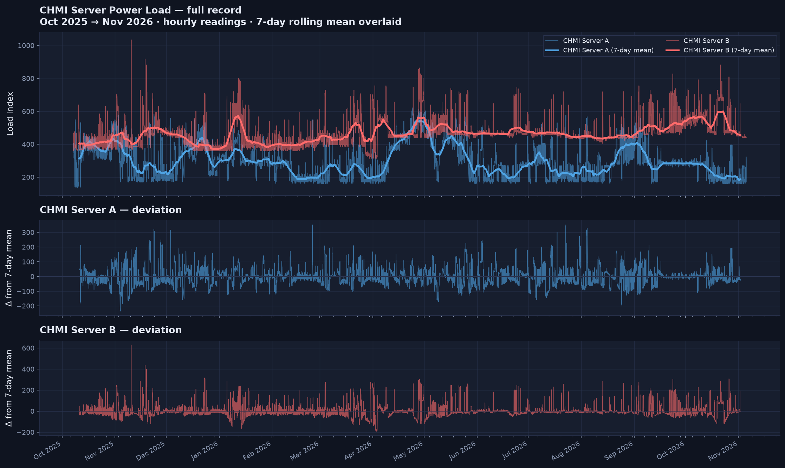
Multi-panel overview of both servers.
InteractiveZoomable series with range buttons and a B−A panel.
InteractiveInteractive diurnal heatmaps.
InteractiveLoad distribution by hour of day.
InteractiveHour × month load surface.
InteractiveHistogram + KDE overlay.
InteractiveDistribution by month.
InteractiveMP4 clips — the record reveals itself over time.
Hourly load with 7-day mean, building up over the full record.
AnimationAverage load as a spinning polar dial (weekday & weekend).
AnimationHour×weekday heatmap building month by month.
AnimationJanuary daily means, revealed day by day.
AnimationKDE growing as data accumulates.
AnimationPublication-quality PNGs (12 in total).
Hourly + 7-day mean + deviations.
Figure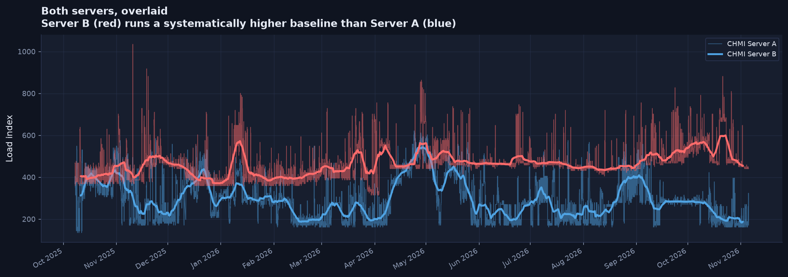
Both servers together.
Figure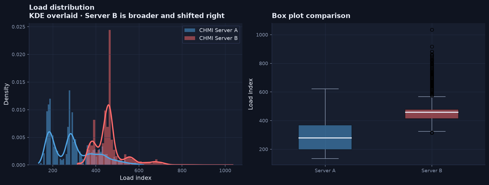
Histogram + KDE + box.
Figure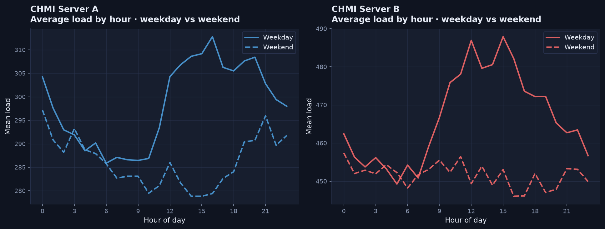
Weekday vs weekend.
Figure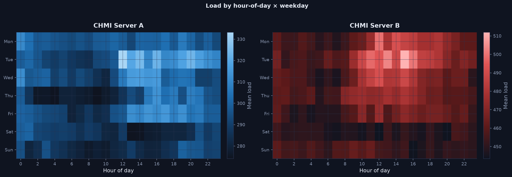
Diurnal structure.
Figure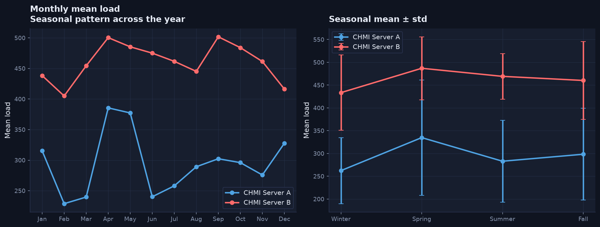
Monthly means + seasons.
Figure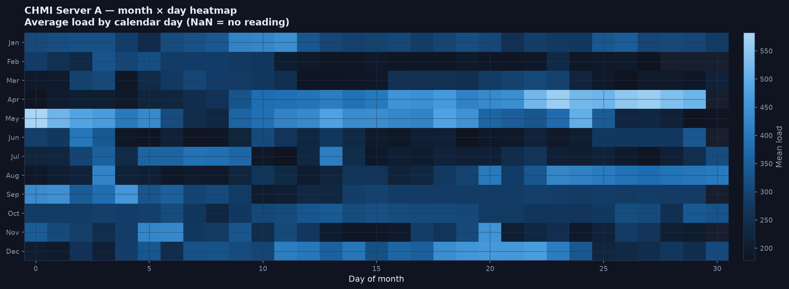
Month × day heatmap.
Figure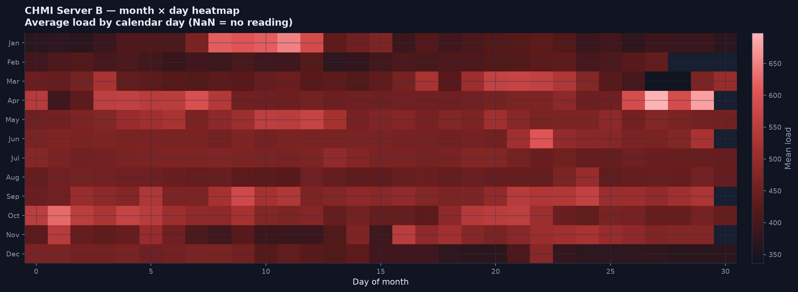
Month × day heatmap.
Figure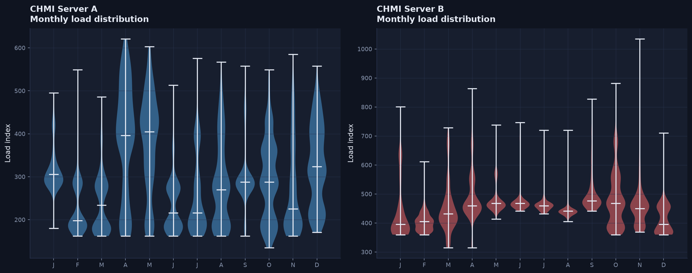
Distribution by month.
Figure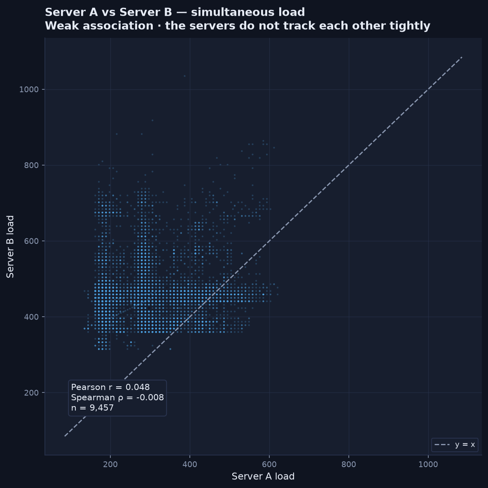
Correlation check.
Figure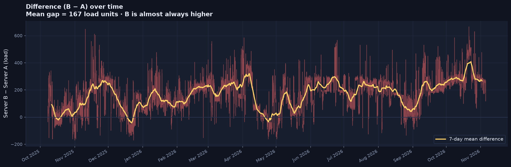
Gap over time.
Figure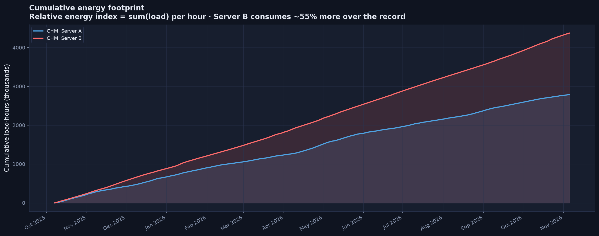
Relative energy footprint.
FigureFull findings, methodology, and how to regenerate everything.